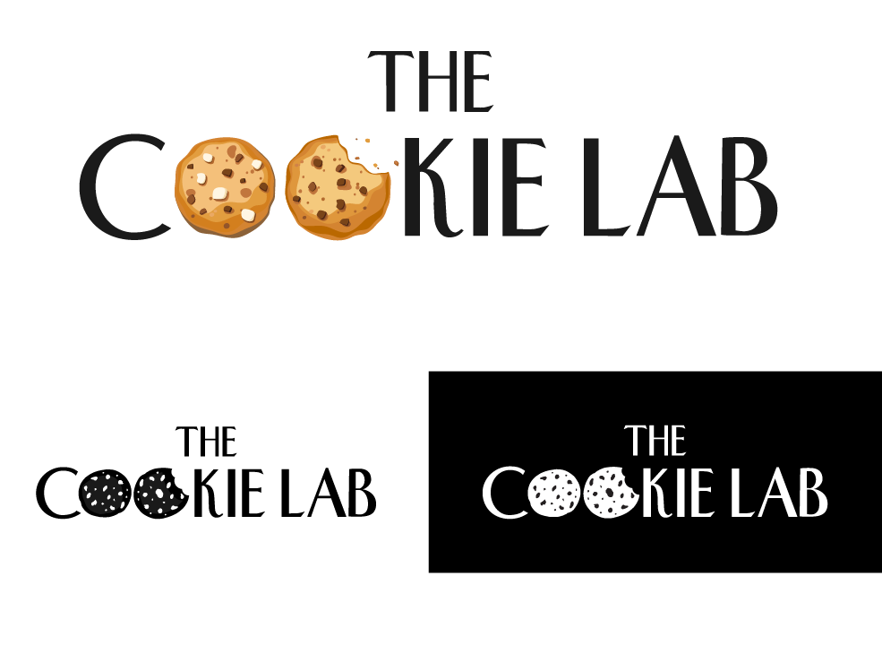
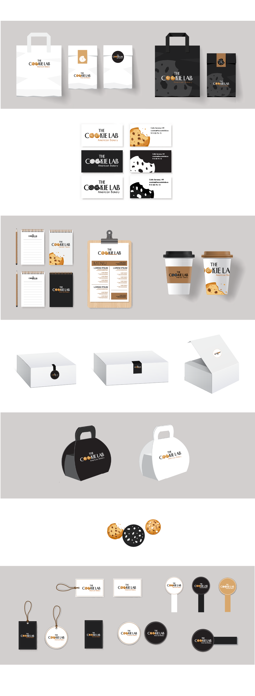
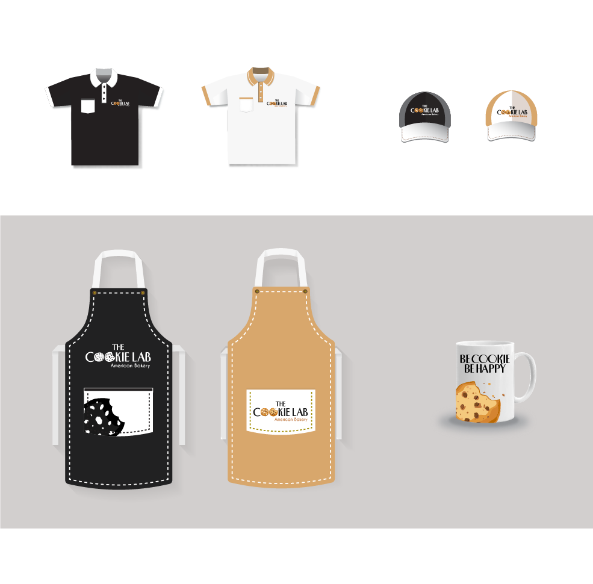
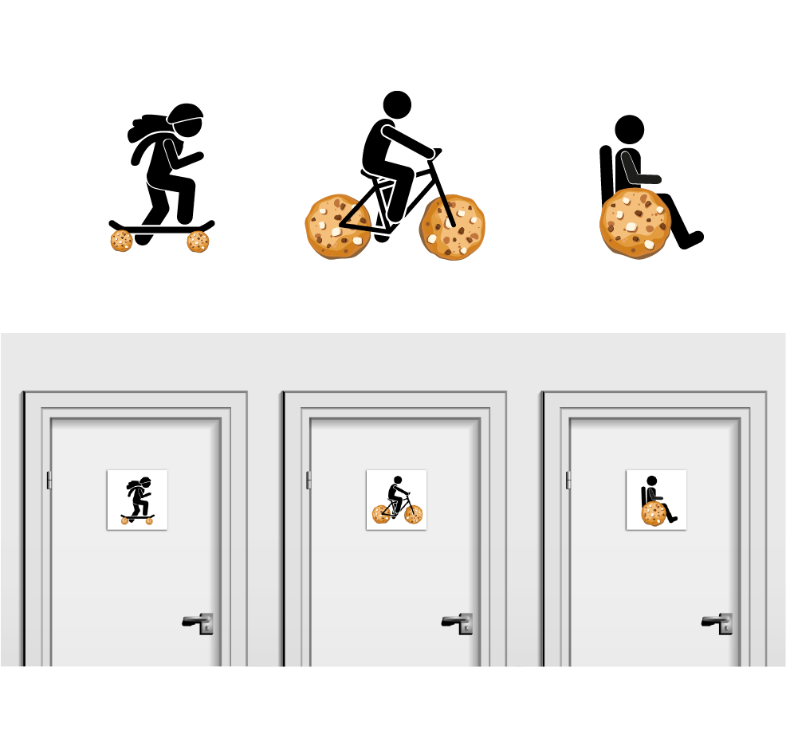
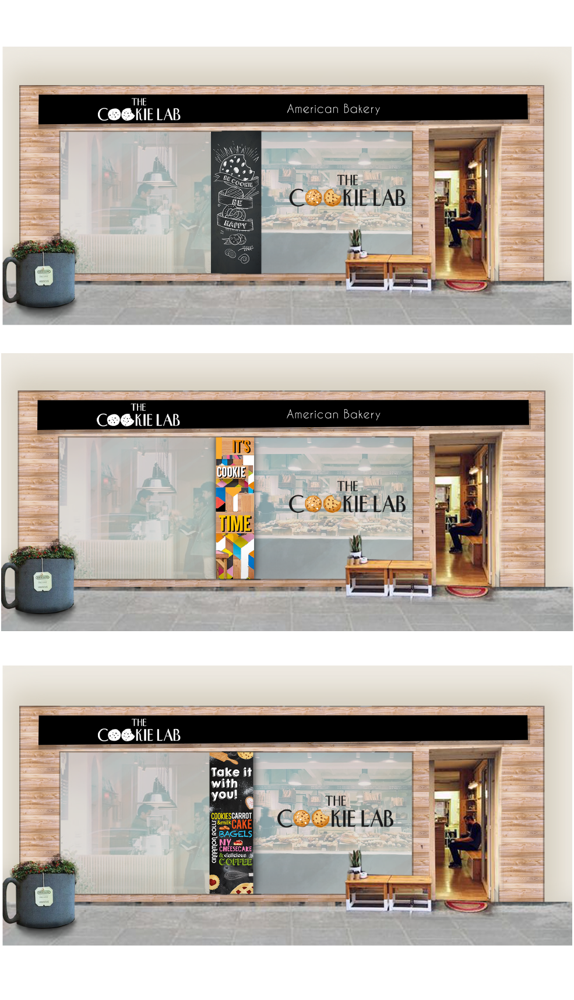
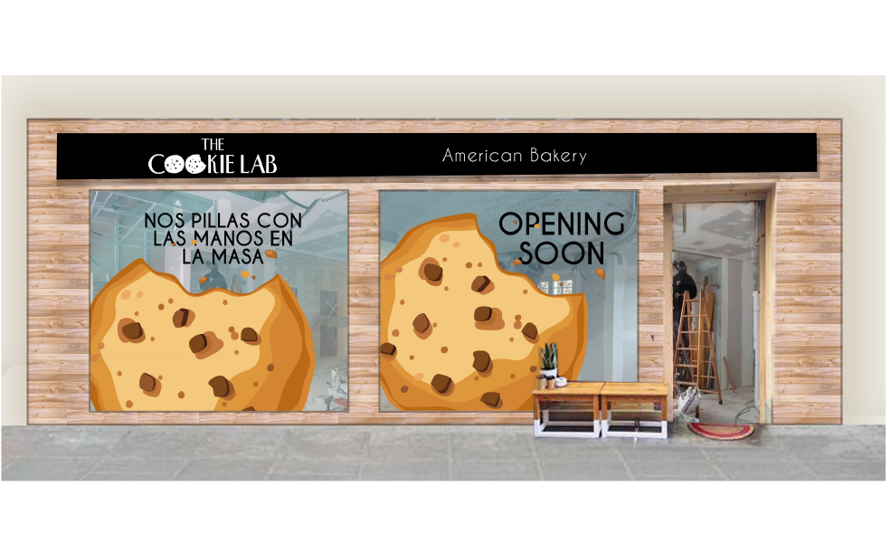

Dentro de la Agencia de publicidad Ideahotel se me encargó el proyecto de desarrollar la identidad corporativa de The Cookie Lab, un nuevo proyecto de la empresa Taste of America dedicada a galletas, pastelería y cafetería.
Buscaban un look neoyorquino, limpio y moderno combinado con la calidez que querían transmitir al público.

Tras la aprobación del logo, realicé la adaptación de éste a todos los materiales de punto de venta así como packaging y etiquetados.

También diseñé merchandising de la marca así como uniformación y otros productos.

Tras desarrollar todo esto, queríamos que la identidad de la marca se trasladara a la cafetería física. Para ello diseñé una serie de creatividades que evocarían la marca en los diferentes puntos del espacio.

Ya teniendo claros todo el interior, me puse manos a la obra con el diseño de la fachada exterior. Mi idea era que desde fuera The Cookie Lab pudiese transmitir todos los atributos de la marca a través de colores, texturas y materiales. Optamos por la madera para dar ese toque cálido y primamos el negro para darle el punto moderno y neoyorquino que queríamos.
Una columna en pleno escaparate nos molestaba visualmente y optamos por ocultarla con un vinilo atractivo y de tono casual. Estas son algunas de las propuestas:

Una vez todo estaba claro y durante la obra del local, diseñé unos vinilos para colocar en el exterior y que empezaran a llamar la atención de los viandantes y vecinos.

El proyecto fue un éxito y actualmente el local se puede visitar en la Calle Serrano donde es complicado no caer en la tentación de disfrutar de una deliciosa cookie al estilo americano.